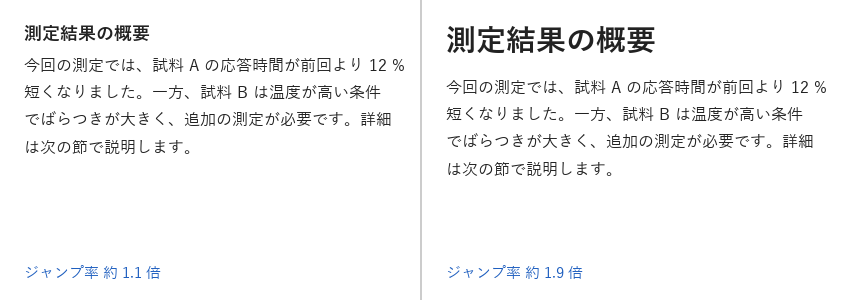
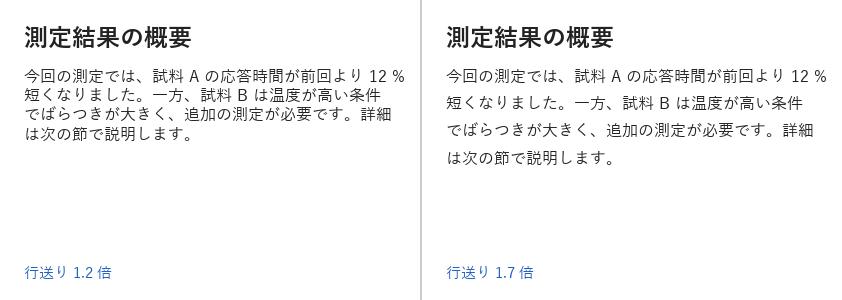

3. タイポグラフィ
タイポグラフィとは、文字の書体・大きさ・太さ・間隔・配置を決めて、文章を読みやすく、かつ意図どおりに伝わるようにする技術です。資料や画面の情報の大部分は文字であるため、タイポグラフィの影響は大きくなります。
3.1. 書体の分類
日本語の書体（フォント）は、大きく明朝体とゴシック体に分けられます。欧文の書体では、これに近い分類としてセリフ体とサンセリフ体があります。
分類 |
特徴 |
向いている用途 |
|---|---|---|
明朝体・セリフ体 |
横線が細く縦線が太い書体です。線の端に「うろこ」や「セリフ」と呼ばれる飾りがあります。 |
印刷物の長い本文 |
ゴシック体・サンセリフ体 |
線の太さがほぼ均一で、飾りがない書体です。小さくても形がつぶれにくい特徴があります。 |
画面の本文、見出し、スライド、グラフのラベル |
画面に表示する文字や、スライドのように離れた位置から読む文字には、ゴシック体が適しています。Windows に標準で含まれる游ゴシックやメイリオ、BIZ UD ゴシックはその例です。BIZ UD ゴシックは、読み間違えにくさに配慮して設計された UD（ユニバーサルデザイン）フォントです。
1 つの資料や画面で使う書体は、原則として 1〜2 種類に絞ります。書体の種類を増やすと、反復の原則が崩れ、全体の統一感がなくなります。強弱を付けたい場合は、書体を変えるのではなく、大きさや太さ（ウェイト）を変えます。
3.2. ジャンプ率
見出しと本文の文字の大きさの比率を、ジャンプ率と呼びます。図 3.1 は、本文を 16 px に固定し、見出しの大きさを変えた例です。

図 3.1 ジャンプ率の比較
ジャンプ率が低いと、見出しと本文の区別がつきにくく、どこに何が書いてあるかを把握するのに時間がかかります。ジャンプ率を高くすると、見出しが目に入りやすくなり、文章の構造がひと目で分かります。
ジャンプ率は高いほどよいわけではありません。落ち着いた印象にしたい場合や、見出しの数が多い場合は、ジャンプ率を控えめにして、太さや余白で区別する方法もあります。重要なのは、コントラストの原則に従い、「違うものははっきり違える」ことです。見出しと本文の大きさの差がわずかだと、意図的な差なのか誤差なのかが読み手に伝わりません。
3.3. 行送りと行長
行の基準線（ベースライン）どうしの間隔を行送り、行と行の間の空き（行送りから文字の大きさを引いたもの）を行間と呼びます。CSS の line-height は、行送りに相当する値です。
図 3.2 は、文字の大きさ 16 px の本文を、行送り 1.2 倍と 1.7 倍で描画した例です。

図 3.2 行送りの比較
行送りが狭いと、次の行へ移るときに読む位置を見失いやすくなります。日本語は漢字や仮名が正方形に近い形で詰まって見えるため、欧文より広めの行送りが適しています。画面の本文では、文字の大きさの 1.5〜1.8 倍が目安です。
1 行の長さ（行長）も読みやすさに影響します。行長が長すぎると、行の終わりから次の行の始まりへ視線を戻すのが難しくなります。日本語の本文では、1 行あたり 40 字程度までを目安にします。行長が長くなる場合は、行送りも広げます。
3.4. 文字の揃え方
横書きの本文は、左揃えを基本とします。行の始まりの位置が一定になるため、次の行を見つけやすくなります。中央揃えは、1〜2 行の短い見出しや、ボタンの中の文字に限って使います。複数行の文章を中央揃えにすると、行ごとに始まりの位置が変わり、読みにくくなります。
3.5. 和文と欧文が混在するときの表記
日本語の文章に英単語や数字を混ぜるときは、次の点に注意します。
英数字には半角文字を使います。全角の英数字は、字形のバランスが悪く、検索や置換でも扱いにくくなります。
英単語や数字の前後に半角の空白を入れます。和文と欧文の境目が分かりやすくなります。本書もこの規則に従っています。
表記の規則を決めたら、資料全体で統一します。たとえば「ユーザー」と「ユーザ」を混在させません。
2 番目の規則は必須ではなく、空白を入れない表記もあります。どちらを選ぶ場合も、資料全体で統一することが大切です。
3.6. Pillow での文章の描画
Pillow の ImageDraw.text は、文字列を自動では折り返しません。Pillow 12 で追加された ImageText.Text.wrap には折り返しの機能がありますが、空白の位置で折り返す仕組みのため、空白を含まない日本語の文章は折り返せません。そこで、FreeTypeFont.getlength で文字列の幅を測りながら、自分で折り返す位置を決めます。
次の関数は、日本語は 1 文字単位で、英数字は単語単位で折り返します。また、句読点や閉じ括弧が行頭に来ないように、それらの文字は前の行の末尾に残します。このような規則を禁則処理と呼びます。
def wrap_text(text: str, font: FontType, max_width: float) -> list[str]:
"""文字列を max_width に収まるように折り返す。
日本語は 1 文字単位で、英数字は単語単位で折り返す。
行頭禁則文字は前の行の末尾に残す。
"""
tokens = re.findall(r"[0-9A-Za-z.]+|.", text)
lines: list[str] = []
current = ""
for token in tokens:
too_wide = font.getlength(current + token) > max_width
if too_wide and current and token not in NO_LINE_START:
lines.append(current.rstrip())
current = token.lstrip()
else:
current += token
if current:
lines.append(current.rstrip())
return lines
折り返した各行は、行送り（文字の大きさ × 倍率）ずつ y 座標をずらして描画します。
def draw_paragraph(draw: ImageDraw.ImageDraw, top: int, font: FontType,
size: int, line_height: float) -> None:
"""本文を折り返して描画する。line_height は行送りの、文字の大きさに対する倍率。"""
lines = wrap_text(BODY, font, PANEL_W - MARGIN * 2)
for i, line in enumerate(lines):
y = top + i * size * line_height
draw.text((MARGIN, y), line, font=font, fill=TEXT_COLOR)
3.7. まとめ
画面やスライドの文字には、ゴシック体を使います。
書体は 1〜2 種類に絞り、強弱は大きさと太さで付けます。
見出しと本文の大きさは、はっきりと違えます。
日本語の本文の行送りは、文字の大きさの 1.5〜1.8 倍を目安にします。
本文は左揃えにし、中央揃えは短い見出しに限ります。
3.8. サンプルコード
ch03_typography.py：図 3.1 と図 3.2 を描画します。